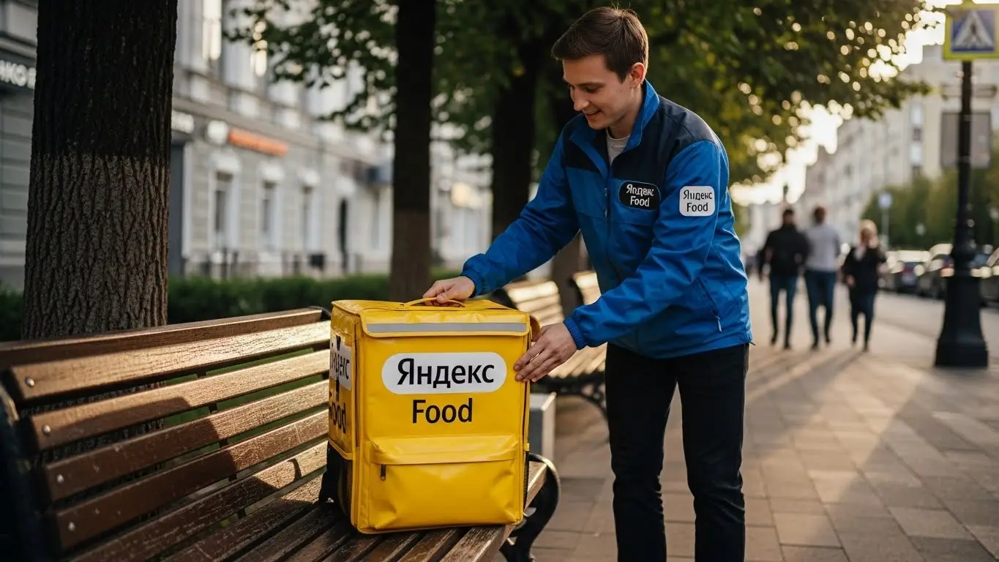

Работа курьером Яндекс Еды в Старом Осколе: доход, график 2025-2026
- Работа курьером Яндекс Еды в Старом Осколе: для кого эта вакансия и что вы получите
- Сколько вы будете зарабатывать курьером в Старом Осколе: калькулятор дохода и разбор выплат
- Реальный заработок курьера в Старом Осколе: смены и месячный доход
- График работы и форматы занятости
- Требования к кандидату и документы
- Самозанятость, налоги и юридическая чистота
- Пошаговое оформление и первый выход на линию в Старом Осколе
- Пешком, на вело или на авто: что выгоднее в Старом Осколе
- Районы, маршруты и «топовые» зоны заказов в Старом Осколе
- Безопасность, страховка, штрафы и оплата простоя
- Плюсы и возможные минусы работы курьером в Старом Осколе
- Короткие ответы на главные вопросы
- Ответы на главные вопросы о работе курьером Яндекс Еды в Старом Осколе
- Итоги и ваш следующий шаг
Все города
Думаешь о работе курьером Яндекс Еды в Старом Осколе? Или уже попробовал, но что-то пошло не так? Многие боятся, что доход будет копеечным, машина быстро «убьётся» на наших дорогах, а штрафы съедят всю прибыль. Или что в часы пик застрянешь где-нибудь на проспекте Алексея Угарова, пока заказ остывает. Забудь про общие рекламные обещания. Здесь я расскажу тебе всю правду про работу курьером Яндекс Еды именно в Старом Осколе, как она есть на самом деле, без прикрас.
Чтобы не разочароваться в первый же месяц и не бросить всё к чертям, важно заранее понимать всю «кухню» изнутри. Ведь одно дело — красивые цифры в объявлении, другое — реальные расходы на бензин или проезд, налоги, тонкости системы приоритетов и, конечно, особенности логистики по нашим районам: от Степного до Жукова, от Космоса до Северного. Большинство новичков в Старом Осколе наступают на одни и те же грабли, теряя время и деньги просто потому, что не знают местной специфики и не умеют работать эффективно. Если ты живёшь в Старом Осколе и хочешь узнать подробнее про работу курьером Яндекс Еда в Старом Осколе, ознакомиться с FAQ, детальным калькулятором дохода и заполнить заявку, то это можно сделать здесь: работа курьером Яндекс Еда в Старом Осколе.
В этом гиде мы разберём всё по полочкам: выясним, какой формат работы (пеший, вело или авто) выгоднее именно в Старом Осколе, посчитаем реальный доход с учётом всех трат и налогов. Я покажу на примерах, где находятся самые «рыбные» места и часы, как погода и сезонность влияют на заработок, и расскажу, как избежать штрафов и блокировок. А ещё честно сравним Яндекс Еду с конкурентами в Старом Осколе и приведём отзывы местных курьеров.
Ну что, готов узнать, как на самом деле обстоят дела? Меня зовут Алексей, я сам не один год крутил баранку и педали по Старому Осколу, а сейчас у меня свой небольшой таксопарк-партнёр. Так что, поверь, я знаю эту работу не понаслышке. Сейчас всё разложу по полочкам, как старший брат, который не будет тебе вешать лапшу на уши. Давай по порядку, без рекламной шелухи – только хардкор, только Старый Оскол.
Прежде чем мы углубимся в детали, предлагаю пройти короткий ликбез по ключевым моментам статьи.
Что ты точно узнаешь из этого разбора по Старому Осколу
В этой статье ты ТОЧНО узнаешь:
- Сколько реально можно заработать курьером в Старом Осколе за смену и месяц, и от чего это зависит?
- Как выбрать самые «рыбные» районы и слоты в Старом Осколе, чтобы максимизировать доход?
- Какой формат доставки (пеший, вело, авто) будет самым выгодным именно для тебя в этом городе?
- За что могут оштрафовать, как работает бесплатная страховка и что такое оплата простоя?
- Как быстро оформиться, какие документы нужны и можно ли начать без опыта?
А если тебе некогда читать всю статью — переходи сразу к заключению, где ты найдёшь короткие ответы на все эти вопросы и указания, в каких разделах искать подробности.
А для наглядности, вот краткая инфографика, которая поможет быстро сориентироваться.
Ключевые показатели работы курьером в Старом Осколе
Работа курьером Яндекс Еды в Старом Осколе: для кого эта вакансия и что вы получите
Работа курьером в Яндекс Еде в Старом Осколе — это не просто возможность заработать, это гибкий инструмент для управления своим временем и финансами. Я сам через это прошел, и могу сказать, что такой формат подходит многим, кто ищет стабильный доход без привязки к офису или строгому графику. Здесь ты сам себе начальник, а это дорогого стоит.

Кому подойдёт эта работа в Старом Осколе
Эта работа отлично подходит тем, кто ищет гибкость и быстрые деньги. Во-первых, это идеальный вариант для студентов местных колледжей и филиалов вузов, которым нужна подработка после пар или на выходных. Ты можешь совмещать учебу с работой курьером, не жертвуя ни тем, ни другим. Во-вторых, это хороший старт для людей без опыта: никаких специальных навыков или дипломов не требуется, всему научат.
Кроме того, работа курьером — это спасение для тех, кому нужна дополнительная подработка к основной занятости или кто временно остался без работы. Автокурьеры, например, могут использовать свой автомобиль в свободное время, чтобы получать дополнительный доход. Главное преимущество — это свободный график и ежедневные выплаты, что позволяет планировать бюджет и получать деньги тогда, когда они нужны.
Главные преимущества для жителей районов Степной, Жукова, Олимпийский
Одно из ключевых преимуществ работы курьером в Яндекс Еде в Старом Осколе — это возможность работать рядом с домом. Тебе не придется тратить часы на дорогу через весь город, чтобы добраться до «рыбных» мест. Например, жители микрорайонов Степной, Жукова или Олимпийский могут выходить на смены прямо из своего двора.
В этих районах достаточно кафе, ресторанов и магазинов, подключенных к сервису, что обеспечивает стабильный поток заказов. Это значит, что ты можешь эффективно использовать свое время, сокращая холостые пробеги и увеличивая количество выполненных доставок. Работа в своем районе позволяет не только экономить на проезде, но и лучше ориентироваться на местности, что тоже влияет на скорость и, соответственно, на твой заработок.
Краткое обещание по доходу и условиям
В Старом Осколе курьер Яндекс Еды может рассчитывать на доход от 2500 до 5000 рублей за смену, в зависимости от количества часов и выбранного типа доставки. При полной занятости, работая 5-6 дней в неделю, вполне реально выйти на месячный доход в 60 000 – 90 000 рублей. Это вполне конкурентные деньги для нашего города.
Важно, что выплаты здесь ежедневные, что очень удобно для планирования личных финансов. Тебе не нужно ждать конца месяца, чтобы получить заработанное. Плюс ко всему, начать можно без опыта, а гибкий график позволяет подстраивать работу под свои личные планы, будь то учеба, семья или другие дела.
- Кейс из практики: Мой знакомый, студент из микрорайона Степной, работает пешим курьером по 4-5 часов в день после занятий. Он выбирает слоты в своем районе и соседних, где много студенческих общежитий и кафе. В среднем, за вечер у него выходит 1800-2500 рублей, а за неделю, работая 4-5 дней, он легко зарабатывает 8-10 тысяч. Главное, он не тратит время на дорогу и всегда знает, где находятся популярные точки.
Вывод по разделу: Работа курьером в Яндекс Еде в Старом Осколе — это отличный вариант для тех, кто ценит гибкость, ищет подработку или основной доход без опыта. Возможность работать в своем районе, например, в Степном или Жукова, значительно повышает эффективность и комфорт. Чтобы максимизировать доход, выбирай слоты в знакомых и оживленных районах, где ты хорошо ориентируешься.
Сколько вы будете зарабатывать курьером в Старом Осколе: калькулятор дохода и разбор выплат
Понимание того, как формируется твой заработок, — это ключ к его увеличению. В Яндекс Еде система выплат прозрачна, но состоит из нескольких компонентов, которые важно учитывать. Это не просто фиксированная ставка, а динамическая модель, которая поощряет активность и эффективность.

Из чего складывается доход курьера
Твой доход как курьера Яндекс Еды складывается из нескольких основных частей. Во-первых, это оплата за каждый выполненный заказ – базовая ставка, которая зависит от сложности и типа заказа. Во-вторых, добавляется доплата за расстояние: чем дальше нужно ехать или идти, тем выше эта часть. Кроме того, есть повышающие коэффициенты, или «коэффициенты спроса», которые активируются в часы пик, в плохую погоду или в районах с высоким спросом, например, в центре Старого Оскола или возле крупных ТРЦ.
Не стоит забывать и про бонусы, которые сервис регулярно предлагает за выполнение определенного количества заказов или работу в определенных зонах. Чаевые от клиентов тоже могут стать приятным дополнением к основному заработку, особенно если ты вежлив и оперативен. Важные преимущества, которые отличают Яндекс Еду, — это оплата простоя, когда ты ждешь заказ, и возможная компенсация проезда, если маршрут был особенно длинным или сложным.
Как пользоваться калькулятором дохода
Чтобы прикинуть свой потенциальный заработок, используй калькулятор дохода, который обычно доступен на сайте или в приложении Яндекс Про. Это простой и удобный инструмент. Тебе нужно будет выбрать тип доставки — пеший, вело или автокурьер, а затем указать, сколько часов в день и сколько дней в неделю ты планируешь работать.
На выходе калькулятор покажет примерный дневной и месячный доход, который ты можешь получить в Старом Осколе. Конечно, это ориентировочные цифры, ведь реальный заработок зависит от многих факторов: от времени суток, погодных условий, твоего рейтинга и даже от того, насколько быстро ты принимаешь и выполняешь заказы. Но для общего понимания и планирования это очень полезный инструмент.
Калькулятор дохода курьера в Старом Осколе
Расчёт примерный и основан на усреднённых показателях для Старого Оскола (около 400 ₽/час).
Реальный доход зависит от бонусов, коэффициентов спроса, твоего рейтинга и других факторов.
Хочешь узнать точные условия и рассчитать свой потенциальный доход? Переходи по ссылке, чтобы узнать все детали о работе курьером Яндекс Еда в твоём городе, ознакомиться с FAQ и заполнить заявку.
Примеры расчёта для пешего, вело- и авто‑курьера в Старом Осколе
Давай рассмотрим несколько реальных сценариев для Старого Оскола. Пеший курьер, работающий в центре, например, в районе Старого города или на Проспекте Металлургов, где много ресторанов и плотная застройка, может зарабатывать около 300-400 рублей в час. За 6-часовую смену это будет 1800-2400 рублей, так как заказы там короткие, но их много.
Велокурьер, курсирующий между спальными микрорайонами, такими как Степной и Жукова, где расстояния чуть больше, но нет сильных пробок, может получать 400-550 рублей в час. За 8-часовую смену это уже 3200-4400 рублей. Наконец, водитель-курьер готов брать заказы по всему городу и даже в пригороды вроде Стойло или Федосеевки. Особенно в часы пик или в плохую погоду он может рассчитывать на 500-700 рублей в час. За 10-часовую смену это до 5000-7000 рублей, учитывая дальние заказы и повышенные коэффициенты.
- Кейс из практики: Мой водитель, Сергей, работает автокурьером в Старом Осколе. Он предпочитает вечерние слоты и выходные, когда спрос выше. За 8-часовую смену в пятницу вечером, когда много заказов из ТРЦ "Боше" и ресторанов в центре, он легко делает 4500-5500 рублей. Он активно использует приложение Яндекс Про, чтобы выбирать зоны с повышенным спросом, и не боится ехать в отдаленные районы, где доплаты за расстояние выше.
Сравнение компонентов дохода для разных типов курьеров
| Компонент дохода | Пеший курьер | Велокурьер | Автокурьер |
|---|---|---|---|
| Базовая оплата за заказ | Стандартная, за короткие дистанции | Стандартная, за средние дистанции | Выше, за дальние и объемные заказы |
| Доплата за расстояние | Минимальная, в пределах 1-2 км | Средняя, за 2-5 км | Максимальная, за 5+ км и пригороды |
| Повышающие коэффициенты | Активны в центре и плотной застройке | Активны в спальных районах и на оживленных улицах | Активны по всему городу, особенно в часы пик и непогоду |
| Бонусы и чаевые | Зависят от активности и качества сервиса | Зависят от активности и качества сервиса | Зависят от активности и качества сервиса |
| Оплата простоя | Действует при ожидании заказа | Действует при ожидании заказа | Действует при ожидании заказа |
| Компенсация проезда | Редко, только в исключительных случаях | Иногда, при очень длинных маршрутах | Часто, за дальние поездки и в пригороды |
Вывод по разделу: Твой заработок в Яндекс Еде в Старом Осколе — это сумма базовой оплаты, доплат за расстояние, повышающих коэффициентов, бонусов и чаевых, с важной страховкой в виде оплаты простоя. Калькулятор поможет тебе прикинуть потенциальный доход, но реальные цифры зависят от твоей стратегии. Чтобы зарабатывать больше, внимательно следи за картой спроса в приложении Яндекс Про и выбирай слоты в наиболее выгодных зонах и в часы пик.
Реальный заработок курьера в Старом Осколе: смены и месячный доход
Ну что, давай разберемся, сколько реально можно заработать, работая курьером в Яндекс Еде и Доставке в Старом Осколе. Это не Москва, где цифры могут быть заоблачными, но и здесь есть свои плюсы и возможности для хорошего дохода. Всё зависит от того, сколько времени ты готов уделять работе, на каком транспорте передвигаешься и насколько грамотно подходишь к выбору смен.
В Яндекс Еде и Яндекс Доставке заработок курьера складывается из нескольких компонентов: оплата за каждый заказ, доплата за расстояние, повышающие коэффициенты в часы пик, бонусы за выполнение определенного количества заказов и, конечно, чаевые. Если ты работаешь эффективно, то твой средний заработок в час может быть вполне достойным. Главное — понимать, как работает система Яндекс Про и использовать ее в свою пользу, чтобы получать стабильные выплаты.
Диапазон дохода для подработки и полной занятости
Реальные вилки дохода в Старом Осколе зависят от многих факторов. Если ты рассматриваешь работу как подработку, уделяя ей 2–4 часа в день, то пеший курьер может рассчитывать на 10 000 – 20 000 рублей в месяц. Велокурьер, благодаря большей мобильности, выйдет на 15 000 – 25 000 рублей. Автокурьер, который может брать больше заказов и на дальние расстояния, при такой же загрузке заработает 20 000 – 35 000 рублей.
Для тех, кто готов работать полную смену, 8–10 часов в день, цифры, конечно, выше. Пеший курьер может получать 25 000 – 40 000 рублей в месяц, велокурьер — 35 000 – 50 000 рублей. А вот автокурьеры в Старом Осколе при полной занятости вполне реально выходят на 45 000 – 70 000 рублей и даже больше, особенно если активно работают в пиковые часы и выходные. Важно помнить, что это доход до вычета расходов на топливо и обслуживание авто, а также налогов для самозанятых курьеров.
| Тип курьера | Подработка (2–4 часа/день) | Полная занятость (8–10 часов/день) |
|---|---|---|
| Пеший курьер | 10 000 – 20 000 ₽/мес | 25 000 – 40 000 ₽/мес |
| Велокурьер | 15 000 – 25 000 ₽/мес | 35 000 – 50 000 ₽/мес |
| Автокурьер | 20 000 – 35 000 ₽/мес | 45 000 – 70 000+ ₽/мес |

Как район, время суток и погода влияют на доход
Твой доход сильно зависит от того, где и когда ты работаешь. В Старом Осколе, как и везде, есть свои «рыбные» места и часы для работы курьером. Вечера, особенно с 18:00 до 21:00, и выходные дни — это всегда пик заказов. В это время рестораны и магазины загружены, а люди чаще заказывают еду на дом. Поэтому в приложении «Яндекс Про» ты увидишь повышенные коэффициенты, которые значительно увеличивают оплату за каждый заказ.
Погода тоже играет тебе на руку. Если на улице дождь, снег, сильный ветер или, наоборот, аномальная жара, желающих выйти за едой становится меньше, а спрос на доставку резко возрастает. В такие дни коэффициенты могут быть максимально высокими, и это отличная возможность заработать больше. Например, в микрорайоне Жукова или Северном, где много жилых домов и кафе, в плохую погоду заказов всегда хватает. Не забывай и про чаевые — в таких условиях клиенты чаще благодарят курьеров за оперативность и заботу.
Советы по увеличению заработка от опытных курьеров
Чтобы увеличить свой заработок без лишних переработок, нужно подходить к работе с умом. Во-первых, всегда старайся брать слоты в пиковые часы — это обеденное время (с 12:00 до 14:00) и вечерний ужин (с 18:00 до 21:00). В выходные дни можно брать более длинные слоты, так как спрос на доставку еды стабильно высокий.
Во-вторых, внимательно следи за картой спроса в приложении «Яндекс Про». Она показывает «горячие» зоны, где сейчас больше всего заказов и действуют повышенные коэффициенты. В Старом Осколе это часто районы вокруг крупных торговых центров, таких как ТЦ Боше или ТЦ Славянский, а также плотно застроенные жилые микрорайоны, например, Лесной или Восточный. Если ты автокурьер, можешь начать в одном районе, а потом, когда там станет тихо, быстро переехать в другую «горячую» зону.
- Кейс из практики: Мой знакомый, автокурьер Сергей из Старого Оскола, обычно начинает день в районе проспекта Алексея Угарова, где много офисов и бизнес-центров, ловит там обеденные заказы. После 14:00, когда спрос падает, он переезжает в микрорайон Жукова или Северный, где больше жилых домов, и ждет вечернего пика. В дождливую погоду он специально выбирает слоты на весь вечер, зная, что коэффициенты будут высокими, и за 8 часов работы может заработать до 4500-5000 рублей, что значительно выше его обычного среднего дохода.
Вывод по разделу: В Старом Осколе работа курьером позволяет рассчитывать на стабильный доход, который напрямую зависит от твоей активности и стратегии. Чтобы максимизировать заработок, выбирай пиковые часы, следи за картой спроса в «Яндекс Про» и не бойся работать в плохую погоду. Это те моменты, когда можно реально увеличить свои выплаты.
График работы и форматы занятости
Одно из главных преимуществ работы курьером в Яндекс Еде и Доставке — это свободный график. Ты сам решаешь, когда и сколько работать, что делает эту вакансию идеальной для тех, кто ищет подработку или хочет совмещать доставку с учебой или основной работой. Никаких строгих начальников и фиксированных смен, ты сам себе хозяин.
Система слотов в приложении «Яндекс Про» позволяет тебе заранее планировать свои выходы на линию. Ты можешь выбрать удобные для себя часы и дни, будь то несколько часов вечером после пар или полноценные смены в выходные. Это дает полную свободу и позволяет подстраивать работу под свой ритм жизни, а не наоборот.
Подработка после учёбы или основной работы
Для студентов или тех, у кого уже есть основная работа, Яндекс Еда в Старом Осколе предлагает отличные возможности для подработки курьером. Например, студент из микрорайона Олимпийский может брать слоты на 3-4 часа в будни после занятий, скажем, с 18:00 до 22:00, и одну полную смену на 6-8 часов в субботу или воскресенье. При таком графике он вполне может зарабатывать 18 000 – 25 000 рублей в месяц, покрывая свои текущие расходы, а ежедневные выплаты помогут управлять бюджетом.
Другой пример: человек, работающий в офисе на проспекте Металлургов, может выходить на линию только по выходным, беря 4-5 часовые слоты в субботу и воскресенье. Это позволяет ему получать дополнительно 12 000 – 18 000 рублей в месяц, не жертвуя основной занятостью. Гибкость графика — это не просто слова, это реальная возможность адаптировать работу под свои нужды.
Полная занятость: как выглядит типичный день курьера
Если ты выбираешь полную занятость, твой день будет более структурированным, но все равно с возможностью адаптации. Типичный день автокурьера в Старом Осколе может выглядеть так: выход на линию около 9:00-10:00 утра. Сначала он выбирает зоны с высокой активностью, например, вокруг ТЦ Славянский или в микрорайоне Студенческий, где много кафе и ресторанов.
Пиковые часы — это, конечно, обед и ужин. Между ними можно сделать перерыв, чтобы перекусить или отдохнуть. Опытные курьеры знают, что после обеда спрос немного спадает, и это хорошее время для короткого перерыва или перемещения в другой район, где ожидается вечерний пик. К вечеру, часов в 18:00, снова начинается активная работа, которая может продолжаться до 21:00-22:00. Заказы чередуются, и приложение «Яндекс Про» постоянно предлагает оптимальные маршруты, чтобы ты не мотался впустую.
- Кейс из практики: Возьмем Ивана, который работает автокурьером на полную ставку в Старом Осколе. Он начинает в 9 утра в микрорайоне Степной, где много жилых комплексов и несколько крупных супермаркетов. До обеда он выполняет заказы из магазинов, а в обеденный пик переключается на доставку из ресторанов в центре города. С 14:00 до 17:00 он берет перерыв, а затем снова выходит на вечерние заказы, часто перемещаясь в микрорайон Восточный, где спрос на ужин всегда высокий. За такой день, работая около 9 часов, Иван стабильно зарабатывает 3000-4000 рублей.
Как планировать слоты и выходы через приложение «Яндекс Про»
Приложение «Яндекс Про» — твой главный инструмент для планирования работы. Через него ты можешь заранее выбрать и забронировать слоты — это временные отрезки, в которые ты обязуешься быть на линии. Выбирая слоты, ты видишь доступные зоны для работы курьером в Старом Осколе и можешь выбрать те, где ожидается наибольший спрос.
Важно: не опаздывать на забронированные слоты. Пунктуальность напрямую влияет на твой рейтинг и, соответственно, на доступность выгодных заказов и слотов в будущем. Чем выше твой рейтинг, тем больше доверия к тебе у системы, и тем чаще ты будешь получать хорошие заказы. Поэтому всегда старайся быть на месте за 5-10 минут до начала смены, чтобы подготовиться, например, проверив термокороб, и сразу начать принимать заказы.
Вывод по разделу: Свободный график работы курьером в Яндекс Еде — это не миф, а реальность, позволяющая подстроить работу под любые жизненные обстоятельства. Используй приложение «Яндекс Про» для грамотного планирования слотов и выбора зон, это поможет тебе эффективно распределять время и стабильно получать заказы.
Требования к кандидату и документы
Когда ты только начинаешь присматриваться к работе курьером, часто возникают вопросы: а подойду ли я вообще? Какие документы нужны? Не слишком ли я молод или, наоборот, стар? На самом деле, Яндекс Еда старается сделать процесс максимально доступным, но определённые требования всё же есть. Давай разберёмся, чтобы у тебя не осталось никаких сомнений относительно работы курьером.
Главное, что нужно понимать – это не какая-то сложная бюрократическая машина. Требования к курьерам Яндекс Еды вполне стандартные и логичные. Они направлены на то, чтобы обеспечить безопасность и качество доставки, как для тебя, так и для клиентов в Старом Осколе.
Возраст, гражданство и базовые условия
Чтобы стать курьером Яндекс Еды, будь то пеший, вело- или автокурьер, тебе должно быть не менее 18 лет. Это важное условие, поскольку работа связана с финансовой ответственностью и взаимодействием с клиентами. Что касается гражданства, то принимаются граждане Российской Федерации, а также стран ЕАЭС – это Беларусь, Казахстан, Армения и Кыргызстан.
Помимо возраста и гражданства, есть и базовые требования к физической форме и техническому оснащению. Для пеших и велокурьеров важна выносливость, ведь придётся много ходить или крутить педали. Особенно это актуально в таких районах Старого Оскола, как микрорайоны Жукова или Олимпийский, где много жилой застройки и заказов. Автокурьерам, конечно, проще в плане физической нагрузки, но им нужно иметь водительские права категории B и личный или арендованный автомобиль. И, конечно, всем без исключения нужен смартфон на базе Android с доступом в интернет, чтобы работать через удобное приложение Яндекс Про.
Какие документы нужны для работы курьером
Список документов для работы курьером Яндекс Еды довольно простой и не вызовет сложностей. Тебе понадобится:
- Паспорт гражданина РФ или страны ЕАЭС: Он нужен для подтверждения личности и гражданства. Убедись, что срок его действия не истёк.
- ИНН (индивидуальный номер налогоплательщика): Этот документ необходим для оформления самозанятости и корректной уплаты налогов.
- Банковская карта: На неё будут приходить все твои заработанные деньги. Важно, чтобы карта была оформлена на твоё имя.
- Медицинская книжка (при необходимости): Если ты планируешь доставлять продукты из Яндекс Лавки или Маркета, а также работать с некоторыми ресторанами, медкнижка может потребоваться. Обычно об этом сообщают заранее, и ты можешь оформить её в любой поликлинике или частном медцентре Старого Оскола. Также для доставки некоторых категорий товаров может понадобиться термокороб.
Подготовить эти документы заранее очень просто. Паспорт и ИНН у большинства уже есть. Банковскую карту можно оформить в любом банке за один день. Если нужна медкнижка, это займёт немного больше времени, но её наличие открывает больше возможностей для заказов.
Можно ли работать с 16 лет и какие есть альтернативы
Понимаю, что многие молодые ребята в Старом Осколе хотят начать зарабатывать как можно раньше. Однако, как я уже говорил, для работы курьером в Яндекс Еде минимальный возраст для начала работы — 18 лет. Это связано с юридическими особенностями оформления самозанятости и полной материальной ответственностью, которая наступает только с совершеннолетия.
Если тебе ещё нет 18, не расстраивайся. Есть много других вариантов подработки, которые подойдут подросткам. Например, можно устроиться промоутером, помощником в магазинах или кафе, расклейщиком объявлений или даже попробовать себя во фрилансе, если есть какие-то навыки в дизайне или текстах. В Старом Осколе всегда найдутся вакансии для подростков, кто хочет заработать, главное — искать и не бояться пробовать.
- Кейс из практики: Мой знакомый, Сергей, 20 лет, приехал в Старый Оскол учиться. Ему нужна была подработка, и он решил стать курьером. У него был паспорт, ИНН и карта. Единственное, чего не хватало – смартфона на Android, так как он пользовался iPhone. Пришлось купить недорогой аппарат специально для работы. Он быстро оформил самозанятость, прошёл обучение и уже через пару дней вышел на линию. Сейчас он успешно совмещает учёбу и работу, доставляя заказы в районе Степного микрорайона.
Вывод по разделу: Требования к кандидатам на работу курьером в Яндекс Еде просты и прозрачны, что позволяет начать работу без опыта. Возраст от 18 лет, гражданство РФ или ЕАЭС, наличие смартфона и базовый набор документов – это всё, что нужно. Такой подход позволяет быстро начать работу без лишней бюрократии. Мой совет: заранее подготовь все необходимые документы и убедись, что твой смартфон соответствует требованиям, чтобы быстро начать работу и не терять время на старте.
Самозанятость, налоги и юридическая чистота
Многие, кто только присматривается к работе курьером, переживают насчёт «официальности» и налогов. Мол, это же не по трудовой, значит, что-то мутное. Сразу скажу: нет, это не так. Работа курьером через Яндекс Еду абсолютно легальна и прозрачна благодаря статусу самозанятого, что обеспечивает официальный доход. Это современный и удобный формат, который государство специально разработало для таких видов деятельности.
Цель этого раздела — развеять все твои страхи и показать, что самозанятость — это не только просто, но и выгодно. Ты будешь работать официально, получать все выплаты на карту и спать спокойно, не переживая за «серые» схемы.
Почему курьеры Яндекс Еды работают как самозанятые
Самозанятость, или как её ещё называют, Налог на профессиональный доход (НПД), — это специальный налоговый режим, созданный для людей, которые работают на себя, оказывая услуги или продавая товары без наёмных сотрудников. Для курьеров Яндекс Еды это идеальный формат работы.
Во-первых, это полностью официальный доход. Ты не работаешь «вчерную», а значит, можешь подтвердить свои доходы, например, для получения кредита или визы.
Во-вторых, тебе не нужна сложная бухгалтерия. Все расчёты, формирование чеков и учёт доходов происходят автоматически через приложение «Мой налог». Это очень удобно, ведь тебе не придётся разбираться в дебетах и кредитах.
В-третьих, это полная легальность работы. Ты защищён законом, и твоя деятельность не вызывает вопросов у налоговой. В отличие от работы за «серый» кеш, где всегда есть риски и отсутствие каких-либо гарантий, самозанятость даёт тебе уверенность и стабильность.
Как за 10 минут оформить самозанятость через «Мой налог»
Оформить самозанятость — это проще, чем кажется. Весь процесс займёт у тебя буквально 10-15 минут, и для этого даже не нужно никуда ходить. Вот пошаговая схема:
- Скачай приложение «Мой налог»: Оно доступно для Android и iOS.
- Зарегистрируйся: Открой приложение и выбери способ регистрации. Самый простой — по паспорту. Тебе нужно будет отсканировать страницы паспорта и сделать селфи для подтверждения личности. Также можно зарегистрироваться через портал Госуслуг или личный кабинет налогоплательщика.
- Привяжи банковскую карту: Это нужно для удобства уплаты налогов, хотя можно платить и вручную.
- Готово! Ты официально самозанятый. Теперь ты можешь приступать к работе курьером Яндекс Еды в Старом Осколе.
Некоторые партнёры Яндекс Еды также предлагают помощь в оформлении самозанятости, если ты не хочешь делать это самостоятельно. Они могут провести тебя по всем шагам или даже сделать это за тебя, но обычно это не требуется, так как процесс максимально упрощён.
Сколько и как платить налоги
Налоговая ставка для самозанятых очень низкая и фиксированная. Если ты получаешь доход от физических лиц (например, чаевые напрямую от клиента), ставка составит 4%. Если доход поступает от юридических лиц или ИП (как в случае с выплатами от Яндекс Еды), ставка будет 6%.
Самое приятное, что тебе не нужно ничего считать самому. Приложение «Мой налог» автоматически формирует чеки после каждого поступления денег от Яндекс Еды и рассчитывает сумму налога. Раз в месяц, до 12 числа, приложение присылает уведомление о сумме налога за предыдущий месяц. Оплатить его нужно до 28 числа того же месяца. Это можно сделать прямо в приложении, привязав банковскую карту, или через квитанцию. Никаких сложных деклараций и походов в налоговую — всё максимально автоматизировано.
Это гораздо проще и безопаснее, чем работать неофициально. Во-первых, ты не рискуешь получить штрафы от налоговой за незаконную предпринимательскую деятельность. Во-вторых, ты формируешь официальный доход, который может пригодиться в будущем, например, для получения кредита.
- Кейс из практики: Иван, 25 лет, из Старого Оскола, долго сомневался, стоит ли оформлять самозанятость. Он привык к обычной работе по найму и боялся налогов. Но когда я объяснил ему, что это всего 6% и всё делается через приложение, он решился. Оформил всё за 7 минут, а уже через месяц удивился, насколько это удобно: налог сам посчитался, пришло уведомление, он нажал кнопку «Оплатить» и забыл. Теперь он спокойно работает автокурьером, зная, что все его доходы легальны.
Сравнение форматов работы: самозанятость vs «серый» кеш
| Параметр | Самозанятый (НПД) | Работа за «серый» кеш (неофициально) |
|---|---|---|
| Легальность | Полностью легально, официальный доход | Нелегально, риск штрафов и проблем с законом |
| Налоги | 4-6% от дохода, рассчитывается автоматически | 0%, но с высоким риском |
| Бухгалтерия | Автоматическая отчётность через приложение «Мой налог» | Отсутствует, нет подтверждения доходов |
| Выплаты | На банковскую карту, прозрачно | Наличными, без официального подтверждения |
| Подтверждение дохода | Есть справка о доходах из приложения | Нет |
| Пенсионные отчисления | Добровольные | Отсутствуют |
Вывод по разделу: Самозанятость — это самый простой, удобный и безопасный способ работать курьером в Яндекс Еде, обеспечивающий стабильный доход. Она обеспечивает тебе официальный доход, минимальные налоги и отсутствие головной боли с бухгалтерией, а также возможность получать ежедневные выплаты. Мой совет: не бойся оформлять самозанятость, это займёт минимум времени и даст тебе уверенность в завтрашнем дне, в отличие от сомнительных «серых» схем.
Пошаговое оформление и первый выход на линию в Старом Осколе
Многие думают, что устроиться курьером — это долго и сложно, с кучей бумаг и ожиданий. На самом деле, в Яндекс Еде процесс максимально упрощен, чтобы ты мог начать зарабатывать буквально в тот же или на следующий день. Это не пустые слова, а реальная практика, которую я видел сотни раз. Главное — следовать простым шагам, и ты быстро окажешься на линии. Работа курьером в Яндекс Еде доступна даже без опыта, предлагая гибкий график и быстрый старт.
Вот, например, мой знакомый, студент из Старого Оскола, по имени Игорь. Ему срочно нужны были деньги на ремонт машины. Он вечером заполнил анкету, на следующий день прошел обучение, забрал термосумку и уже к обеду взял свой первый заказ в районе "Микрорайона Жукова". К вечеру у него на счету было уже около 2000 рублей. Это отличный пример того, как работа курьером в Яндекс Еде позволяет получать ежедневные выплаты. Так что, если есть желание, барьеров почти нет.
В целом, весь процесс оформления и выхода на линию в Старом Осколе продуман так, чтобы минимизировать твои временные затраты. От заполнения анкеты до первого заказа проходит минимум времени, и это действительно удобно для тех, кто ищет быстрый и стабильный доход. Условия работы курьером в Яндекс Еде максимально прозрачны. Мой совет: не откладывай, если решил попробовать, ведь каждый день промедления — это упущенная прибыль.
Шаг 1–2: анкета и онлайн‑обучение
Первый шаг — это заполнение анкеты на сайте или через приложение. Здесь всё стандартно: тебе нужно будет указать свои контактные данные, информацию о себе, выбрать город (Старый Оскол, конечно) и предпочтительный способ доставки – пеший, вело или авто. Не переживай, если у тебя нет опыта работы курьером, это не проблема. Главное — быть совершеннолетним (от 18 лет) и иметь желание работать. Требования к курьерам в Яндекс Еде минимальны, что делает эту работу доступной для многих.
После заполнения анкеты и проверки твоих данных (обычно это занимает немного времени), тебе предложат пройти короткое онлайн-обучение. Это не скучные лекции, а интерактивные материалы, которые объясняют основные принципы работы сервиса Яндекс Еда, как пользоваться приложением Яндекс Про, а также правила безопасности на дороге и при общении с клиентами. В конце обучения тебя ждет небольшой тест, чтобы убедиться, что ты усвоил материал. Справиться с ним несложно, вопросы базовые и логичные.
Шаг 3: получение сумки и доступа к заказам в Старом Осколе
Как только ты успешно пройдешь обучение, следующим этапом станет получение брендированной термосумки и, при необходимости, другой экипировки. В Старом Осколе это можно сделать несколькими способами. Чаще всего, ты получаешь термокороб через официальных партнеров Яндекс Еды, которые имеют пункты выдачи в городе. Адреса таких точек всегда доступны в приложении Яндекс Про или будут указаны в инструкциях после обучения.
Иногда есть возможность заказать доставку термосумки прямо к тебе домой, что очень удобно. После получения сумки и подтверждения всех данных, тебе открывается полный доступ к заказам в приложении. Это значит, что ты готов к работе и можешь начинать принимать заявки. Важно помнить, что термосумка — это не просто аксессуар, а инструмент, который помогает сохранить качество заказа и является частью твоего профессионального имиджа.
Шаг 4: первый слот и первый доход
Вот мы и подошли к самому интересному – первому выходу на линию. В приложении Яндекс Про ты увидишь доступные слоты (временные интервалы) и зоны повышенного спроса в Старом Осколе. Выбирай удобное время и район, например, знакомый тебе "Микрорайон Олимпийский" или "Центральный". Не бойся брать короткие слоты на 2-3 часа, чтобы освоиться.
Как только ты выйдешь на линию, приложение начнет предлагать тебе заказы. Первый заказ может быть волнительным, но помни, что все инструкции будут в приложении. Просто следуй маршруту, забирай еду из ресторана или магазина, доставляй клиенту. И вот, ты уже заработал свои первые деньги! Многие курьеры в Старом Осколе начинают работать в тот же день, когда получают термосумку, или на следующий. Это отличная возможность быстро получить доход и понять, как всё устроено, а также получать ежедневные выплаты.
Пешком, на вело или на авто: что выгоднее в Старом Осколе
Выбор способа доставки в Старом Осколе — это не просто вопрос личных предпочтений, но и стратегическое решение, которое напрямую влияет на твой заработок и комфорт. Город имеет свою специфику: есть плотно застроенный центр, обширные спальные районы и пригороды. Поэтому важно понимать, какой вид транспорта будет наиболее эффективным именно для тебя и для конкретных зон, чтобы работа курьером приносила максимальный доход.
Например, у меня был курьер, который сначала работал пешим курьером в центре, но потом купил электровелосипед и стал брать заказы между "Микрорайоном Степной" и "Микрорайоном Восточный". Его доход сразу вырос на 30%, потому что он стал быстрее перемещаться и брать больше заказов за смену. Это наглядный пример того, как правильный выбор транспорта под городские условия Старого Оскола может изменить ситуацию и увеличить заработок.
Выбирая между пешим курьером, велокурьером или водителем-курьером, всегда учитывай особенности Старого Оскола. Каждый вариант имеет свои преимущества и недостатки, которые мы сейчас подробно разберем. Подумай о своих физических возможностях, наличии транспорта и о том, где именно ты планируешь работать, чтобы выбрать оптимальные условия работы.
Сравнение форматов работы курьером в Старом Осколе
| Параметр | Пеший курьер | Велокурьер | Водитель‑курьер |
|---|---|---|---|
| Зоны работы | Центр, плотная застройка (Старый город, Микрорайон Жукова) | Между спальными районами (Степной, Восточный, Олимпийский) | Весь город и пригороды (Федосеевка, Колодезное) |
| Скорость доставки | Средняя, зависит от пробок и расстояния | Высокая, объезд пробок | Высокая на дальних дистанциях, может стоять в пробках |
| Потенциальный доход | Средний | Выше среднего | Высокий (особенно на дальних заказах) |
| Физическая нагрузка | Высокая | Средняя (оплачиваемый фитнес) | Низкая |
| Расходы | Минимальные (проезд, связь) | Средние (обслуживание велосипеда) | Высокие (топливо, амортизация, ТО) |
В итоге, выбор формата доставки в Старом Осколе зависит от твоих целей и возможностей. Пеший курьер идеален для центра, велокурьер — для быстрых перемещений между спальными районами, а автокурьер — для максимального охвата города и пригорода. Мой совет: начни с того, что тебе доступно, а потом, если понравится, можешь рассмотреть смену формата для увеличения дохода. Это поможет тебе найти наиболее выгодные вакансии курьера в Яндекс Еде.
Пеший курьер: для центра и плотной застройки в Старом Осколе
Пешая доставка в Старом Осколе отлично подходит для работы в центральных районах, таких как "Старый город", "Центральный микрорайон" или "Микрорайон Жукова". Здесь плотная застройка, много кафе и ресторанов, а расстояния между точками доставки часто небольшие. В часы пик, когда город стоит в пробках, пеший курьер может быть даже быстрее авто, обходя заторы и используя пешеходные зоны.
Это отличный вариант, если у тебя нет своего транспорта или ты просто хочешь совместить работу с физической активностью. Многие студенты местных вузов выбирают именно этот формат, чтобы подработать после пар, не тратясь на бензин или проезд. Главное — удобная обувь и готовность к активному движению, ведь за смену ты можешь пройти несколько десятков километров, получая при этом стабильный заработок.
Велокурьер: быстрые доставки между спальными районами
Велосипед — это золотая середина для курьера в Старом Осколе. Он даёт тебе скорость и маневренность, позволяя объезжать пробки и быстро перемещаться между спальными районами, такими как "Микрорайон Степной", "Микрорайон Восточный" или "Микрорайон Олимпийский". В этих районах много жилых домов, магазинов и небольших кафе, что обеспечивает стабильный поток заказов.
Кроме того, работа велокурьером — это отличный способ поддерживать себя в форме. Ты получаешь "оплачиваемый фитнес", что для многих является дополнительным бонусом. Расходы на обслуживание велосипеда значительно ниже, чем на автомобиль, а пробки для тебя практически не существуют. Это идеальный вариант для тех, кто ценит скорость, экологичность и активный образ жизни, а также ищет подработку с хорошим доходом.
Водитель‑курьер: заказы по всему городу и пригороду Федосеевка, Колодезное, Лапыгино
Если у тебя есть личный автомобиль, то работа водителем-курьером в Старом Осколе открывает самые широкие возможности. Ты можешь брать дальние заказы, которые недоступны пешим или велокурьерам, охватывая не только весь город, но и пригороды, такие как Федосеевка, Колодезное или Лапыгино. Именно на таких заказах, особенно в часы пик или в плохую погоду, можно заработать больше всего благодаря повышенным коэффициентам, что значительно увеличивает твой потенциальный доход.
Автомобиль обеспечивает комфорт и позволяет брать крупные заказы, например, из Яндекс Маркета или Лавки, которые могут быть слишком объемными для велосипеда. Да, есть расходы на топливо и обслуживание, но при грамотном планировании маршрутов и выборе выгодных слотов, эти затраты с лихвой окупаются. Это самый прибыльный формат для тех, кто готов работать на своем авто по всему городу и не боится больших расстояний, ищет стабильный заработок.
Районы, маршруты и «топовые» зоны заказов в Старом Осколе
Если ты решил начать работу курьером в Старом Осколе, то первое, что нужно понять – это географию города и его «рыбные» места. Знание районов, где постоянно высокий спрос на доставку, поможет тебе максимизировать заработок и не тратить время на пустые переезды. Город у нас хоть и не миллионник, но имеет свои особенности, которые влияют на плотность заказов и, соответственно, на твой доход.
Работая в Яндекс Еде или Яндекс Доставке, ты быстро научишься ориентироваться по карте спроса в приложении Яндекс Про. Однако мой опыт подсказывает, что есть стабильные точки, где заказы появляются чаще всего, особенно в пиковые часы. Это позволяет планировать смены более эффективно, выбирая зоны с повышенными коэффициентами и сокращая время ожидания между доставками.
Где больше всего заказов: ТРЦ, бизнес‑центры и туристические места
В Старом Осколе самые «хлебные» места для курьеров — это, безусловно, крупные торговые центры и прилегающие к ним территории. Например, ТРЦ "БОШЕ" и ТРЦ "Славянский" всегда генерируют много заказов из фудкортов и магазинов. Здесь стабильно высокий спрос на доставку еды и товаров, особенно в обеденное время и по вечерам.
Не стоит забывать и про деловые кварталы, сосредоточенные в центральной части города, например, вдоль проспекта Ленина и улицы Ленина. В этих зонах много офисов, а значит, и постоянные заказы на бизнес-ланчи и кофе. Повышающие коэффициенты здесь не редкость, особенно в будни, что увеличивает твой доход.
Что касается туристических мест, то хотя Старый Оскол не является классическим туристическим центром, зоны вокруг Краеведческого музея и Парка Победы также могут быть активными. Здесь часто расположены популярные кафе и рестораны, которые привлекают посетителей и, как следствие, генерируют заказы на доставку. Пешим курьерам и велокурьерам здесь особенно удобно работать из-за плотной застройки и коротких расстояний, что позволяет выполнять больше доставок.
Работа в своём районе: примеры для популярных жилых кварталов
Многие курьеры предпочитают работать рядом с домом, и в Старом Осколе это вполне реально и выгодно. В крупных спальных микрорайонах, таких как Микрорайон Степной, Микрорайон Олимпийский и Микрорайон Юбилейный, достаточно своих кафе, ресторанов и магазинов, подключенных к Яндекс Еде и Яндекс Доставке. Такой подход позволяет брать заказы, почти не выезжая за пределы привычной территории, и эффективно выполнять работу курьером.
Такой подход экономит время и деньги на дорогу до «топовых» зон, особенно если ты пеший курьер или велокурьер. В этих районах часто встречаются точки Яндекс Лавки и Яндекс Маркета, что добавляет разнообразия в заказы и позволяет поддерживать стабильный поток. Работая в своём районе, ты лучше знаешь местные особенности, короткие пути и расположение домов, что ускоряет доставку и увеличивает твой заработок.
Например, велокурьер, который живет в Микрорайоне Жукова, может легко обслуживать заказы из местных пиццерий и супермаркетов, а также соседнего Микрорайона Королева. Это позволяет ему делать 3-4 доставки в час в пиковые часы, зарабатывая до 1500-2000 рублей за вечернюю смену, не тратясь на бензин и не уставая от долгих переездов. Главное — знать, где расположены основные точки притяжения заказов и как быстро до них добраться, чтобы максимизировать свой доход.
Как выбирать зоны и слоты в «Яндекс Про», чтобы не мотаться впустую
Приложение Яндекс Про — твой главный инструмент для эффективной работы курьером. В нём есть карта спроса, которая показывает зоны с повышенными коэффициентами, или, как мы их называем, «горячие» зоны. Эти зоны подсвечиваются разными цветами, указывая на текущий спрос. Твоя задача — научиться их правильно использовать, чтобы увеличить свой заработок.
Выбирай слоты в тех зонах, где спрос стабильно высокий, или где ты знаешь, что будет много доставок в определенное время. Например, в обеденный перерыв (с 12:00 до 14:00) и вечером (с 18:00 до 21:00) спрос обычно растет по всему городу, но особенно в центральных и торговых районах. Планируй свои маршруты так, чтобы не возвращаться пустым после выполнения заказа.
Используй функцию «цепочка заказов», если она доступна, чтобы приложение автоматически предлагало тебе следующий заказ по пути к текущему клиенту или сразу после него. Это значительно сокращает время простоя и увеличивает количество выполненных доставок в час, что напрямую влияет на твой заработок. Кроме того, автокурьеры могут брать заказы и в пригороды Старого Оскола, такие как Федосеевка или Обуховка, где оплата за расстояние будет выше, что также увеличивает доход.
| Параметр | Центральные/Торговые зоны (ТРЦ "БОШЕ", пр. Ленина) | Спальные микрорайоны (Степной, Олимпийский) |
|---|---|---|
| Плотность заказов | Высокая, особенно в пики (обед, вечер, выходные) | Средняя, стабильная, особенно вечером |
| Повышающие коэффициенты | Частые, особенно в часы пик и при плохой погоде | Редкие, но возможны при высоком спросе |
| Тип курьера | Пеший, велокурьер (быстро), автокурьер (для дальних заказов) | Пеший, велокурьер (знание местности), автокурьер (для больших заказов) |
| Особенности | Много ресторанов, кафе, магазинов. Возможны пробки. | Много жилых домов, супермаркетов, Яндекс Лавок. Короткие расстояния. |
Вывод по разделу: Чтобы эффективно работать курьером в Старом Осколе, важно хорошо знать город и уметь пользоваться картой спроса в Яндекс Про. Сочетай работу в центральных и торговых зонах с доставками в своём районе, чтобы максимизировать свой заработок и минимизировать холостой пробег. Всегда планируй свои слоты в «горячих» зонах, чтобы не терять доход и получать ежедневные выплаты.
Безопасность, страховка, штрафы и оплата простоя
Работа курьером, как и любая другая, имеет свои риски, но важно знать, что Яндекс Еда и Яндекс Доставка заботятся о своих партнерах. Здесь есть четкие правила, система поддержки и механизмы защиты твоего дохода, которые помогают чувствовать себя увереннее на линии. Не нужно бояться, но быть информированным – это твоя обязанность.
Мы поговорим о том, как сервис страхует тебя на сменах, какие правила безопасности нужно соблюдать, чтобы избежать проблем, за что могут быть штрафы и, что самое главное, как работает оплата простоя, которая является ключевым преимуществом работы курьером в Яндексе. Это поможет тебе понять условия работы курьером и чувствовать себя защищенным, а также увеличить свой заработок.
Бесплатная страховка на сменах и что она покрывает
Один из важных плюсов работы курьером в Яндекс Еде – это бесплатная страховка жизни и здоровья, которая действует на каждой твоей смене. Это не просто слова, а реальная защита, которая покрывает несчастные случаи, произошедшие во время выполнения заказов. Например, если ты поскользнулся и получил травму, или попал в ДТП как велокурьер или автокурьер, страховка поможет.
Она покрывает медицинские расходы, временную нетрудоспособность и, в самых печальных случаях, серьезные травмы или потерю трудоспособности. Максимальная сумма покрытия может достигать 2 000 000 рублей, что дает серьезную финансовую подушку. Важно помнить, что для активации страховки нужно сразу сообщить о происшествии в службу поддержки через приложение Яндекс Про. Это показывает, что ты не остаешься один на один с проблемами, работая курьером.
Правила безопасности на дороге и при доставке
Безопасность – это твой приоритет номер один. Для пеших курьеров это означает внимательность на пешеходных переходах, использование светоотражающих элементов в темное время суток и избегание опасных маршрутов. Велокурьеры должны всегда использовать шлем, иметь исправные тормоза и фонари, а также строго соблюдать правила дорожного движения, не выезжая на проезжую часть, где это запрещено.
Водителям-курьерам необходимо следить за техническим состоянием своего автомобиля, соблюдать скоростной режим и правила парковки, чтобы не создавать аварийных ситуаций и не получать штрафы. В плохую погоду, будь то дождь, снег или гололед, всегда снижай скорость и будь предельно осторожен. Аккуратность нужна и при обращении с заказами и деньгами: всегда проверяй целостность упаковки и будь внимателен при расчетах с клиентом, чтобы избежать проблем при работе курьером.
Какие бывают штрафы и как их избежать
Штрафы в Яндекс Еде – это не самоцель, а скорее инструмент для поддержания высокого качества сервиса. Они применяются за серьезные нарушения, которые могут негативно сказаться на клиентах или работе сервиса в целом. К таким нарушениям относятся:
- грубость по отношению к клиенту,
- порча заказа по твоей вине,
- регулярные и необоснованные опоздания, а также
- отказ от уже принятого заказа без уважительной причины.
Чтобы избежать штрафов и понижения рейтинга, всегда будь вежлив и пунктуален. Если видишь, что опаздываешь, предупреди клиента и поддержку. В случае повреждения заказа, не пытайся скрыть это, а сразу свяжись со службой поддержки – они помогут найти решение. Помни, что твой рейтинг напрямую влияет на количество доступных заказов, поэтому поддерживать его высоким – в твоих интересах для стабильного заработка.
Что такое оплата простоя и как она защищает ваш доход
Оплата простоя – это одно из ключевых преимуществ работы курьером в Яндекс Еде, которое отличает сервис от многих конкурентов. Этот механизм защищает твой доход в ситуациях, когда ты находишься на смене, но заказов мало или приходится долго ждать их выполнения. Например, если ты приехал в ресторан, а заказ еще не готов, и ожидание превышает установленное время, тебе начисляется оплата за каждую минуту простоя, что гарантирует твой заработок.
То же самое касается ситуаций, когда ты ждешь клиента у двери дольше определенного времени. Оплата простоя действует автоматически и начисляется по фиксированной ставке, что гарантирует тебе минимальный заработок даже в «нерыбные» часы или при форс-мажорах. Это дает уверенность в том, что твоё время на линии не будет потрачено впустую, и ты всегда получишь ежедневные выплаты за свою работу курьером.
| Параметр | Бесплатная страховка | Оплата простоя | Штрафы |
|---|---|---|---|
| Что это | Защита жизни и здоровья курьера на смене | Компенсация времени ожидания заказа/клиента | Санкции за нарушение правил сервиса |
| Когда действует | При несчастных случаях во время выполнения заказов | При ожидании в ресторане/у клиента дольше нормы, или при отсутствии заказов на слоте | При грубости, порче заказа, опозданиях, отказах от заказов |
| Как защищает доход | Покрывает мед. расходы, компенсирует нетрудоспособность | Гарантирует минимальный заработок, даже если заказов нет или их мало | Стимулирует соблюдать правила, чтобы не терять рейтинг и доступ к заказам |
| Как избежать/использовать | Сразу сообщать в поддержку о происшествии | Выбирать слоты, но знать, что ты защищен от отсутствия заказов | Быть вежливым, пунктуальным, аккуратным, общаться с поддержкой |
Вывод по разделу: Безопасность и защита дохода – важные аспекты работы курьером в Яндекс Еде. Бесплатная страховка и оплата простоя дают тебе уверенность, что ты не останешься без поддержки и стабильного заработка. Чтобы избежать штрафов, достаточно соблюдать простые правила вежливости, пунктуальности и аккуратности. Всегда используй службу поддержки, если возникли вопросы или проблемы, чтобы твоя работа курьером была максимально комфортной.
Плюсы и возможные минусы работы курьером в Старом Осколе
Любая работа имеет свои особенности, и работа курьером в Старом Осколе – не исключение. Это касается как сервисов Яндекс Еда, так и Яндекс Доставка. Важно понимать не только привлекательные стороны, но и возможные сложности, чтобы принять взвешенное решение. Честный взгляд на вещи помогает избежать разочарований и правильно подготовиться к работе.
Сильные стороны работы курьером в Старом Осколе
Одна из главных причин, почему многие выбирают работу курьером Яндекс Еды или Яндекс Доставки в Старом Осколе – это гибкий график. Ты сам решаешь, когда выходить на линию: можно работать несколько часов после учебы, в выходные или полный день, подстраивая смены под свои планы. Такой свободный график особенно удобен для студентов Старооскольского технологического института или тех, кто ищет подработку к основной занятости, ведь для старта не требуется опыт.
Еще один весомый плюс – ежедневные выплаты. Деньги за выполненные заказы приходят на карту практически сразу, что позволяет оперативно распоряжаться своим доходом. Это снимает проблему ожидания зарплаты раз в месяц и дает финансовую свободу. Кроме того, работа курьером позволяет выбирать удобные зоны для доставки рядом с домом. В Старом Осколе ты можешь работать, например, в Юго-Западном районе или возле ТРЦ "Боше", не тратя много времени на дорогу по городу.
Не стоит забывать и о поддержке. Сервис обеспечивает страховку на время смены, что важно для безопасности, особенно для велокурьеров и автокурьеров. Все выплаты официальные, поскольку курьеры работают как самозанятые, что дает уверенность в завтрашнем дне и прозрачность в налоговых отчислениях. Это важные условия работы, которые ценят многие.
- Кейс из практики: Например, один студент СТИ НИТУ МИСиС, проживающий в микрорайоне Жукова, успешно совмещает учёбу и работу. Он выходит на линию в будни после пар на 3-4 часа и по 6-8 часов в выходные. За счет выбора слотов в своем районе и рядом с ним (например, в Центральном), он успевает и учиться, и зарабатывать около 20-25 тысяч рублей в месяц на карманные расходы, не тратя время на поездки по Старому Осколу.
| Параметр | Плюсы работы курьером в Старом Осколе | Возможные минусы работы курьером |
|---|---|---|
| График | Полная гибкость, можно совмещать с учебой/другой работой | Требует самодисциплины для стабильного дохода |
| Выплаты | Ежедневные, быстрый доступ к заработанным деньгам | Доход зависит от количества заказов и активности |
| Место работы | Можно работать рядом с домом, в знакомых районах | Иногда приходится ездить в менее выгодные зоны |
| Официальность | Официальный статус самозанятого, страховка | Необходимость самостоятельно платить налоги (хотя это просто) |
| Нагрузка | Активный образ жизни, возможность быть на свежем воздухе | Физическая усталость, работа в любую погоду |
Вывод по разделу: Работа курьером в Старом Осколе предлагает отличные условия для тех, кто ценит гибкость, быстрые выплаты и официальное оформление. Однако, чтобы максимизировать доход, важно быть активным и уметь планировать свои смены.
С какими сложностями чаще всего сталкиваются курьеры
Конечно, есть и обратная сторона медали. Первая и самая очевидная сложность – это физическая нагрузка. Пешим курьерам и велокурьерам приходится много двигаться, подниматься по лестницам, особенно если заказы идут в многоэтажки в Юго-Западном или Северо-Восточном районах. Автокурьеры также устают от постоянного вождения и пробок, которые хоть и не такие сильные, как в мегаполисах, но в часы пик в центре Старого Оскола или на проспекте Алексея Угарова могут замедлить доставку.
Вторая проблема – работа в плохую погоду. Дождь, снег, сильный ветер или жара – курьеры доставляют заказы в любых условиях. Это требует хорошей экипировки и выносливости. Бывают и возможные простои, когда заказов мало, особенно в "мертвые" часы или дни. Однако сервис Яндекс Еда компенсирует время простоя, что снижает риски для дохода, но все равно может влиять на настроение.
Наконец, общение с разными клиентами. Большинство людей адекватны и доброжелательны, но иногда встречаются и те, кто может быть недоволен или груб. Важно сохранять спокойствие и вежливость, а в случае серьезных проблем всегда можно обратиться в службу поддержки.
- Кейс из практики: Как рассказывает один велокурьер, работая в районе ТРЦ "Маскарад" и прилегающих жилых кварталах, он столкнулся с сильным ливнем. Курьер промок до нитки, но доставил заказ вовремя. В итоге получил хорошие чаевые и бонус за работу в плохую погоду, но признался, что физически было тяжело. Он понял, что качественная водонепроницаемая одежда – это не прихоть, а необходимость для работы курьером.
Вывод по разделу: Курьерская работа требует физической выносливости и готовности к любым погодным условиям. Справляться с этим помогают правильная экипировка, знание системы оплаты простоя и умение сохранять позитивный настрой при общении с клиентами.
Кому такая работа подходит, а кому лучше поискать другой формат
Работа курьером в Старом Осколе идеально подходит тем, кто ищет гибкость и возможность самостоятельно управлять своим временем. Это отличный вариант для студентов, молодых мам, людей, которым нужна подработка, или тех, кто временно остался без основной работы. Если ты активен, любишь движение, не боишься ответственности и готов работать на результат, то эта сфера может стать для тебя хорошим источником дохода, даже без опыта.
С другой стороны, если ты предпочитаешь стабильный офисный график, не любишь физические нагрузки, плохо переносишь плохую погоду или не готов к постоянному общению с людьми, то, возможно, стоит рассмотреть другие варианты. Курьерская работа – это не для тех, кто ищет легких денег без усилий. Здесь важна самоорганизация и готовность к динамичному ритму.
Вывод по разделу: Работа курьером – это отличный выбор для активных и самостоятельных людей, которым важен гибкий график и быстрый заработок. Если же ты ценишь предсказуемость и минимальные физические нагрузки, лучше поискать более традиционную офисную или удаленную занятость.
Короткие ответы на главные вопросы
Здесь собраны краткие ответы на самые частые вопросы, которые помогут тебе быстро сориентироваться в работе курьером Яндекс Еды в Старом Осколе.
Быстрая шпаргалка: ответы на ключевые вопросы о работе курьером в Старом Осколе
Короткие ответы на ключевые вопросы
Сколько реально можно заработать курьером в Старом Осколе за смену и месяц, и от чего это зависит?
В Старом Осколе доход за смену варьируется от 2500 до 5000 рублей, а при полной занятости можно выйти на 60 000 – 90 000 рублей в месяц. Заработок зависит от типа доставки (пеший, вело, авто), количества часов, повышающих коэффициентов в пиковые часы и погодных условий.
→ Подробнее читай в разделе «Реальный заработок курьера в Старом Осколе: смены и месячный доход».Как выбрать самые «рыбные» районы и слоты в Старом Осколе, чтобы максимизировать доход?
Самые выгодные зоны — это крупные ТРЦ (БОШЕ, Славянский), деловые кварталы (пр. Ленина) и плотно застроенные жилые микрорайоны (Степной, Жукова, Олимпийский). Выбирай слоты в пиковые часы (обед, вечер, выходные) и следи за картой спроса в приложении «Яндекс Про», чтобы работать в «горячих» зонах.
→ Подробнее читай в разделе «Районы, маршруты и «топовые» зоны заказов в Старом Осколе».Какой формат доставки (пеший, вело, авто) будет самым выгодным именно для тебя в этом городе?
Пешая доставка выгодна в центре и плотной застройке (Старый город, Жукова), велокурьер — для быстрых перемещений между спальными районами (Степной, Восточный). Автокурьер получает максимальный доход на дальних заказах по всему городу и в пригородах (Федосеевка, Колодезное), особенно в плохую погоду.
→ Подробнее читай в разделе «Пешком, на вело или на авто: что выгоднее в Старом Осколе».За что могут оштрафовать, как работает бесплатная страховка и что такое оплата простоя?
Штрафы применяют за грубость, порчу заказа, регулярные опоздания. Бесплатная страховка покрывает несчастные случаи на сменах (до 2 млн рублей). Оплата простоя защищает твой доход, начисляясь, если заказов мало или приходится долго ждать в ресторане/у клиента.
→ Подробнее читай в разделе «Безопасность, страховка, штрафы и оплата простоя».Как быстро оформиться, какие документы нужны и можно ли начать без опыта?
Оформиться можно за 1-2 дня: заполнить анкету, пройти онлайн-обучение, получить термосумку. Опыт не требуется. Нужны паспорт (от 18 лет), ИНН, банковская карта и смартфон на Android.
→ Подробнее читай в разделе «Пошаговое оформление и первый выход на линию в Старом Осколе».
Для полного понимания темы рекомендую прочитать всю статью — там ты найдёшь примеры, сравнения и дельные советы из практики.
Ответы на главные вопросы о работе курьером Яндекс Еды в Старом Осколе
Понимаю, что перед тем, как принять решение, всегда остаются вопросы. Это нормально. Мы собрали самые частые вопросы о работе курьером Яндекс Еды в Старом Осколе, чтобы ты мог получить полную картину и развеять последние сомнения. Здесь мы подробно разберем все нюансы, которые волнуют новичков, желающих стать курьером.
Ответы на ключевые вопросы кандидатов
Нужно ли оформлять самозанятость и как платить налоги?
Да, оформление самозанятости — это обязательное условие для работы курьером в Яндекс Еде в Старом Осколе. Не пугайся, это совсем несложно: регистрация занимает буквально 10 минут через приложение «Мой налог». Это официальный статус, который позволяет легально получать доход и платить налоги по льготной ставке, что делает работу курьером официальной и прозрачной.
Налог для самозанятых составляет 4% с доходов от физических лиц и 6% с доходов от юридических лиц, к которым относится Яндекс. Все расчеты и оплата налогов происходят автоматически через приложение «Мой налог», тебе не придется вести сложную бухгалтерию. Это делает оформление самозанятости максимально простым и удобным, никаких «серых» схем и переживаний по поводу законности заработка курьера.
Какой телефон и интернет нужны для работы курьером?
Для работы курьером Яндекс Еды тебе понадобится смартфон на базе операционной системы Android, версии не ниже 7.0. Приложение «Яндекс Про», твой главный инструмент для работы курьером, через которое ты будешь принимать заказы и строить маршруты, работает только на этой платформе. Важно, чтобы телефон был достаточно производительным, не зависал и имел стабильный GPS-модуль.
Кроме того, критически важен стабильный мобильный интернет и достаточный объем трафика. Без стабильного мобильного интернета ты просто не сможешь получать заказы, отслеживать маршруты и оперативно связываться с клиентами или поддержкой Яндекс Еды. Убедись, что твой тарифный план покрывает активное использование интернета в течение всей смены.
Что будет, если в смену мало заказов — как работает оплата простоя?
Это один из ключевых моментов, который выгодно отличает работу курьером в Яндекс Еде от многих других сервисов доставки. Если ты выходишь на слот, то есть заранее бронируешь определенное время работы, и заказов в этот период мало, твой доход как курьера все равно будет защищен. Система Яндекс Еды предусматривает оплату простоя.
Это значит, что даже если ты ждешь заказ, но его нет, тебе все равно начисляется минимальная гарантированная сумма за время, проведенное на линии. Это дает уверенность в стабильном заработке, даже в непиковые часы или при низкой загрузке заказов в Старом Осколе. Ты не останешься без денег, просто ожидая следующего заказа, что является важным преимуществом для курьеров.
Есть ли в Яндекс Еде штрафы и за что их могут применить?
Как и в любой крупной компании, в работе курьером Яндекс Еды есть система контроля качества и стандарты работы, за нарушение которых могут применяться меры, включая штрафы или снижение рейтинга курьера. Чаще всего это происходит за грубое нарушение правил: порчу заказа, опоздания, грубость по отношению к клиенту или партнеру.
Однако, если ты работаешь ответственно, вежливо общаешься и соблюдаешь правила сервиса Яндекс Еды, никаких проблем не возникнет. Система больше ориентирована на мотивацию и поощрение курьеров, чем на наказания. Главное — быть внимательным и оперативно решать возникающие вопросы через службу поддержки.
Сколько реально можно заработать курьером в Старом Осколе и чем эта вакансия лучше других сервисов?
В Старом Осколе реальный заработок курьера Яндекс Еды зависит от многих факторов: типа транспорта, количества отработанных часов и выбранных слотов. Пеший курьер может рассчитывать на доход от 300-450 рублей в час, велокурьер — от 400-550 рублей, а автокурьер — до 600-800 рублей в час в пиковые часы. При полной занятости водители-курьеры в Старом Осколе могут зарабатывать до 80 000 – 90 000 рублей в месяц. Это делает работу курьером на своем авто очень привлекательной.
Главные преимущества работы курьером Яндекс Еды перед другими сервисами доставки — это гарантированная оплата простоя, которая защищает твой доход, и бесплатное страхование жизни и здоровья на время смены. Кроме того, приложение Яндекс Про предлагает гибкий график работы, ежедневные выплаты и доступ к большому количеству заказов из разных микрорайонов Старого Оскола, таких как Макаренко, Зеленый Лог и Северный, а также торговые центры, такие как ТЦ Боевая Дача, что позволяет эффективно планировать маршруты и увеличивать заработок.
Можно ли работать без опыта и что будет на обучении?
Да, работать курьером в Яндекс Еде можно абсолютно без опыта работы. Это одна из самых доступных вакансий курьера, которая не требует специальных навыков или предыдущего стажа. Главное — желание работать, ответственность и умение пользоваться смартфоном, а также готовность к обучению.
Перед началом работы ты пройдешь короткое онлайн-обучение. Оно включает в себя видеоуроки и тесты, которые познакомят тебя с правилами сервиса, стандартами безопасности, особенностями работы с приложением «Яндекс Про» и этикетом общения с клиентами. Это обучение поможет тебе быстро освоиться в роли курьера и начать зарабатывать уверенно.
Берут ли с 16–17 лет и какие есть ограничения по возрасту?
На данный момент для работы курьером в Яндекс Еде в Старом Осколе минимальный возраст для работы курьером составляет 18 лет. Это стандартное требование сервиса Яндекс Еда, которое распространяется на все типы курьеров — пеших, велокурьеров и водителей-курьеров.
Поэтому, если тебе еще нет 18, придется немного подождать. Это связано с юридическими особенностями оформления самозанятости и ответственностью, которая ложится на курьера при выполнении доставок.
Итоги и ваш следующий шаг
Краткие выводы по работе курьером в Старом Осколе
Мы подробно разобрали ключевые аспекты работы курьером Яндекс Еды в Старом Осколе, от потенциального заработка до нюансов оформления самозанятости. Теперь у тебя есть полное понимание того, как устроен этот процесс и какие возможности для заработка он открывает.
Работа курьером в Яндекс Еде в Старом Осколе — это отличная возможность для тех, кто ищет гибкий график и стабильный доход. Ты можешь зарабатывать от 300 до 800 рублей в час, в зависимости от выбранного типа курьера (пеший, вело, авто) и активности, а при полной занятости доход автокурьера может достигать 90 000 рублей в месяц. Условия работы курьером максимально прозрачны: есть гарантированная оплата простоя, ежедневные выплаты и бесплатное страхование жизни и здоровья.
Эти условия выгодно отличают работу в Яндекс Еде от многих других сервисов доставки в Старом Осколе, где нет такой защиты дохода и гибкости. Ты сам выбираешь, когда и сколько работать, а приложение «Яндекс Про» помогает эффективно планировать смены и маршруты по всему Старому Осколу, включая микрорайоны Макаренко и Северный, а также торговые центры, такие как ТЦ Боевая Дача, обеспечивая максимальный заработок.
Как сделать первый шаг уже сегодня
Если ты готов начать зарабатывать курьером в Яндекс Еде, первый шаг очень прост и не займет много времени. Для начала тебе нужно заполнить анкету на сайте или через приложение Яндекс Про. Это займет всего несколько минут, и уже скоро с тобой свяжутся для дальнейших инструкций.
После этого подготовь необходимые документы для оформления самозанятости: паспорт, ИНН и банковскую карту для получения ежедневных выплат. Затем пройди короткое онлайн-обучение, которое поможет тебе освоить все тонкости работы курьером. Как только все формальности будут улажены, ты сможешь выбрать свой первый слот в приложении «Яндекс Про» и выйти на линию, чтобы получить свой первый заказ и начать зарабатывать в Старом Осколе.